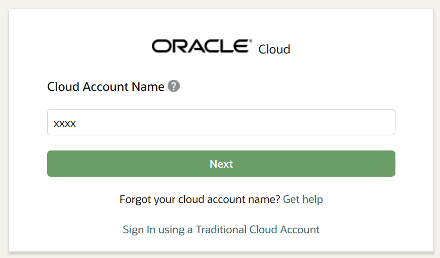
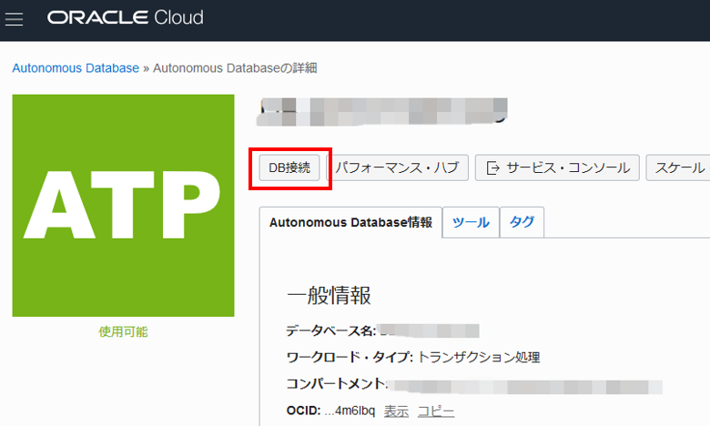

この章ではまず最初のステップとして、メニュー画面を操作し、リージョンおよびコンパートメントを設定します。 そして、ADBインスタンスを作成します。またADBインスタンスにデータベース・ユーザー（スキーマ）を作成します。
ハイエンドなデータベースを簡単すぐに構成できることをご確認ください。
所要時間 : #1 約5分, #2 約20分
1. リージョンを設定し、コンパートメントを用意しよう
作業の流れ :
- サービス画面へのアクセス
- リージョンの確認、設定
- コンパートメントの確認、作成
1. サービス画面へのアクセス
まず初めにOracle Cloud Infrastructure のコンソール画面から、ADBのサービス画面にアクセスします。
（OCIのコンソールへのアクセスに関する詳細はを参照ください。）
-
ブラウザから https://www.oracle.com/jp/index.html にアクセスし、ページ上部の アカウント をクリックし、クラウドにサインイン をクリックします。
本手順書ではFirefoxを前提に記載しています。英語表記の場合は Sign in to Cloud をクリックしてください。

-
お手持ちのクラウドアカウント名（テナント名）を入力し、 Next をクリックします。

-
クラウドユーザー名 と パスワード を入力し、 サイン・イン をクリックしてログインします。
以下のようなダッシュボード画面が表示されればOKです。

上手く表示されない場合は以下のURLをお試しください。尚、 <クラウド・アカウント> はご自身のクラウドアカウント名（テナント名）に置き換えてください。
https://console.ap-tokyo-1.oraclecloud.com/?tenant=<クラウド・アカウント>
補足）ダッシュボード画面の使い方
① ユーザー関連の確認/設定が可能です（ユーザ名の表示・パスワード変更 等）
② 表示言語の設定が可能です
③ リージョン（データセンター）の選択が可能です
④ 画面左上のメニューボタンを押すとメニューリストがスライドインしてきます（赤点線の枠内）
⑤ メニューリスト左端のスクロールバーを上下させることで、下方にある（見えない）サービスを表示させることが可能です

2. リージョンの確認、設定
デフォルトではクラウドアカウントの Home Region のみが利用可能です。
他のリージョンでインスタンスを作成したい場合は、メニュー画面上部からリージョンを選択します。

【リージョンの追加方法】
利用したいリージョンが有効化されていない場合は、以下の手順で追加してください。
① リージョン選択メニュー を表示します
② Manage Regions をクリックします
③ Regions選択画面より有効化したいリージョンの Subscribe To This Region をクリックします
④ 有効化されると緑色で表示されます

- 有効にしたリージョンが表示されない場合、一度ブラウザをリロード（F5）してください。それでも表示されてない場合は一旦ログアウトし再度ログインしてください。
- リージョンを追加しても課金には影響ありません。
3. コンパートメントの確認、作成
コンパートメントを利用することで、コンパートメント毎に権限やリソースの管理、課金状況の確認等が行えるようになります。
コンパートメントに関する詳細は こちら、もしくは マニュアルを参照ください。
以下の手順でコンパートメントの選択します。
① 画面左上の メニュー をクリックし、サービスの一覧を表示させます
② サービス一覧から Autonomous Transaction Processing を選択し、ADBのサービス画面を表示します
③ コンパートメント を選択します（ここでは adb-hol-01 を選択しています）

【コンパートメントの追加方法】
デフォルトではrootコンパートメント以外は存在せず、rootコンパートメントのみが表示されます。
この場合、rootコンパートメントの直下にインスタンスが構成されます。
新たにコンパートメントを追加したい場合は以下の手順で追加してください。
① メニューから Identity - Compartments を選択します
② Create Compartment をクリックします
③ NAME（コンパートメント名）を入力して Create Compartment をクリックしてください（画面は adb-hol-01 を作成しています）

2. ADBインスタンスを作成してみよう
作業の流れ :
- ATPインスタンスの作成（プロビジョニング）
- クレデンシャル・ウォレットのダウンロード
- ATPインスタンスに接続してみよう（SQL Developer）
- SQL Developer WebでATPインスタンスに接続してみよう
- データベース・ユーザーの作成（Oracle ML/ APEXの利用時は不要）
1. ATPインスタンスの作成（プロビジョニング）
ATPインスタンスを作成します。
※ 事前にリージョン、コンパートメント（ adb-hol-01 ）が選択されていることをご確認ください。
-
左上のメニューからAutonomous Transaction Processingを選択します。

-
Autonomous Database の作成 をクリックすると作成ウィンドウが立ち上がります。

-
以下の記載例を参考に各項目を入力し、最後にAutonomous Databaseの作成 をクリックします。
集合ハンズオンセミナーにおける注意事項全ての値は基本的に任意ですが、集合ハンズオンセミナー実施時に限り、記載されている通りにご入力ください。 赤色 の箇所は特に注意ください。
-
コンパートメントの選択：adb-hol-01
- 表示名：atp01
- サービスメニュー画面での表示用です。
- データベース名：atp01
- インスタンスへの接続時に利用します。
- ワークロード・タイプの選択：トランザクション処理
- システムが分析用途であればデータ・ウェアハウス（ADW）を選択する
- JSON 中心のアプリケーション開発にはJSONを選択する
- APEX アプリケーション開発にはAPEXを選択する
- それ以外はトランザクション処理（ATP）を選択する（本ハンズオンではこちらを選択ください。）
-
デプロイメント・タイプの選択：共有インフラストラクチャ
-
Always Free：なし
-
データベース・バージョンの選択：19c
- OCPU数：2
- インスタンスに割り当てるoCPU数です。インスタンス作成後でもオンラインで増減可能です。
- ストレージ(TB)：1
- ストレージ容量。システム関連の予約領域も含みます。インスタンス作成後でもオンラインで増減可能です。
- 自動スケーリング： なし
- チェックを有効にすると負荷状況に応じて自動的にコア数を増減します
- プレビュー・モードの有効化：なし（現在はプレビュー期間ではないため表示されません）
- チェックを有効にすると、開発評価に利用可能な新しいバージョンのデータベースを構成できます
- Username：（固定値 / 変更不可）
- ADMINスキーマはインスタンスを管理するためのユーザーです。他のユーザーの作成等、さまざまな管理業務を実行できます。
- Password：Welcome12345#
- ADMINスキーマのパスワードです。
- ネットワーク・アクセスの選択：
- すべての場所からのセキュアアクセスを許可
- アクセス制御ルールの構成：なし
- チェックを入れると、特定のIPレンジ、CIDR、VCNからのアクセスのみを許可するようホワイトリストを設定できます。
集合ハンズオンセミナーの時は、「すべての場所からのセキュアアクセスを許可」をご選択ください。
- チェックを入れると、特定のIPレンジ、CIDR、VCNからのアクセスのみを許可するようホワイトリストを設定できます。
- アクセス制御ルールの構成：なし
- 仮想クラウド・ネットワーク
- 仮想クラウド・ネットワーク：任意
- サブネット：任意
- ホスト接頭辞：任意
- ネットワーク・セキュリティグループ：任意
仮想クラウド・ネットワーク（VCN）については、こちらをご参照ください。
- すべての場所からのセキュアアクセスを許可
- ライセンスタイプの選択：ライセンス込み
- Bring Your Own License： すでにお持ちのDBライセンスをCloudに持ち込んで利用する場合に選択します。有効なDBライセンスをお持ちでなくこちらのタイプを選択するとライセンス違反となりますのでご注意ください。
- License Included： DBソフトウェアの利用料やサポート費用を含め全てサブスクリプション形式で利用する場合に選択します。
- 拡張オプション（タグ）：なし
- 利用しているテナント内で各種リソースを管理する際に有用です。例えば、”Prod”、”Dev”といった形でタグ付けし、REST APIにてDev インスタンスは一括で停止する。といった用途に活用できます。
-
-
インスタンスが無事作成できたことを確認します。
（しばらくするとオレンジ色のプロビジョニング中から緑色の使用可能に変わります。使用可能になればインスタンスの作成は完了です。）
2. SQL Developer WebでATPインスタンスにアクセスしてみよう
Autonomous Databaseではいくつか開発ツールがビルトインされており、インスタンス作成直後から利用することが可能です。
ここではデータベースオブジェクトの管理、SQL作成などが実施できるSQL Developer Webを利用し、上記で作成したATPインスタンスにアクセスしてみましょう。
-
メニュー画面から、インスタンスを選択してインスタンスのメニュー画面を表示します。
-
ツールタブを選択し、SQL Developer Webを開く をクリックします。

-
ユーザ名は admin 、パスワードは インスタンス作成時に指定した値 （Welcome12345#）を入力し、 サインイン をクリックします。（初回は多少時間がかかります）

-
ワークシートが起動します。
（起動には多少時間がかかります。初回は利用方法のガイダンスが表示されるので、内容を確認ください）

-
ADBインスタンスを操作できるか確認するために、ワークシートに任意のSQLを貼り付け、 緑色の実行 ボタンをクリックします。
ここでは例として接続しているユーザーのユーザー名を確認しています。ADMINが表示されたらOKです。
SQL > SELECT USERNAME FROM USER_USERS ;
3. データベース・ユーザーを作成してみよう
ADBインスタンスを作成すると、デフォルトでADMINユーザが作成されていますが、
アプリケーションを構成する場合は、個別にデータベース・ユーザー（スキーマ）を作成することが多いかと思います。
ここではADBにおけるデータベース・ユーザーの作成してみます。
Oracle ML(Notebook)やAPEX等、Autonomous Databaseに同梱される一部のアプリケーションを利用する際は、それぞれのアプリ内でユーザ作成を実施するため、本手順は不要です。また以下はSQL Developer Webを利用していますが、SQL Developerでも実施いただけます。
-
SQL Developer Webにて、ADMINユーザーが選択されていることを確認します

-
以下をワークシートに貼り付け、緑色の実行ボタン をクリックし、新規データベース・ユーザー（スキーマ）を作成します。
ここでは、ユーザ名: adbuser 、パスワード : Welcome12345# で新規作成しています
SQL> CREATE USER adbuser IDENTIFIED BY Welcome12345#; -
以下をワークシートに貼り付け、 緑色の実行ボタン をクリックし、操作権限（ロール）をユーザーに付与します。
ここでは例としてAutonomous Databaseで事前定義されている DWROLE ロール を付与しています。（要件に応じて、従来の権限（Connect, Resource,等々）を個別に付与することも可能です）
SQL> GRANT DWROLE TO adbuser; -
以下をワークシートに貼り付け、 緑色の実行ボタン をクリックし、データ利用の上限を設定します。
インスタンス作成時のストレージを1TBと指定した場合、その1TBの中で各ユーザがどれだけ利用できるかを設定できます。
ここでは例として上限を10GBにしています。
BEGIN DBMS_CLOUD_ADMIN.GRANT_TABLESPACE_QUOTA( username => 'adbuser', tablespace_quota => '10G' ); END; /特に上限を設けず、ストレージサイズ上限まで利用する場合は以下を実行します。
BEGIN DBMS_CLOUD_ADMIN.GRANT_TABLESPACE_QUOTA( username => 'adbuser', tablespace_quota => 'UNLIMITED' ); END; / -
新規ユーザ(ここではadbuser)が作成されたことを確認してください。表示されない場合はブラウザをリフレッシュ(F5)してください

4. クレデンシャル・ウォレットのダウンロード
ADBインスタンスへの接続には、対象インスタンスへの接続情報が格納されたクレデンシャル・ウォレットを利用する必要があります。
（より高いセキュリティを担保するために、ADBインスタンスはcredential.ssoファイルを利用した接続のみを受け入れます。）
まず、ADBへの接続情報が格納されるCredential.zipファイルをお手元のPCにダウンロードしましょう。
-
先程のAutonomous Databaseの詳細画面に戻り、 DB接続 をクリックします

-
ダウンロードウィザードが起動するので、ウォレットのダウンロード をクリックします。

【ウォレットの選択について】
- インスタンス・ウォレット
- 特定のインスタンスの資格証明のみが記載
- アプリケーションからの接続はこちらの利用を推奨
- リージョナル・ウォレット
- 選択されたリージョン内の全てのインスタンスの資格証明が記載
- 他のインスタンスへの接続時も利用できるため、主に管理目的での利用に限定ください
- インスタンス・ウォレット
-
ウォレットファイルに付与するパスワードを入力し、ダウンロードをクリックして、お手元のPCの任意の場所に保存してください。
（本ハンズオンガイドでは便宜上、パスワードは Welcome12345# に統一ください）

5. ATPインスタンスに接続してみよう（SQL Developer）
それでは接続してみましょう。手元のPCにインストールしたクライアントツールを利用したアクセスします。
SQL Developerを起動し、管理者アカウント(ADMIN)でADBへ接続します。
-
SQL Developerを起動後、画面左上の接続アイコンをクリックします。

-
以下の記載例を参考に各項目を入力し、ADBインスタンスへの接続設定を行います。
① 各項目に接続情報を入力します。
-
Name : atp01_high_admin （”high”は接続サービスの一つ。詳細は にて扱います）
- ユーザー名 : admin
- パスワード : Welcome12345#（インスタンス作成時に設定したADMINユーザーのパスワード）
- パスワードの保存：チェックあり（実際の運用に際しては、セキュリティ要件を踏まえ設定ください）
- 接続タイプ: クラウド・ウォレット
- 構成ファイル: （事前にダウンロードしておいたウォレットファイルを選択）
② サービス：atp01_high を選択（接続サービスに相当。詳細は にて扱います）
③ テスト をクリックし、正しく接続できるか確認します。（正しく接続出来れば、左下のステータスに 成功 と表示されます。）
④ テストに成功したことを確認し、 保存 をクリックします。（左上の接続リストに表示され、次回以降の登録作業をスキップできます。）
⑤ 接続 をクリックします。

-
-
ワークシートが起動しますので、サンプルクエリを実行してADBインスタンスに正しく接続できているか確認します。
① SQL Developerにてご自身で作成した接続を選択します。
② 以下のクエリをワークシートに貼り付けます。
SQL> SELECT USERNAME FROM USER_USERS;③ スクリプトの実行 ボタンをクリックし実行します（左隣の 文の実行 ボタンで実行しても構いません）
④ エラーなく実行結果が返ってくれば確認完了です

以上で、この章の作業は終了です。
NOTE
よくある質問やTipsを記載
1. OCPU=1でパラレル処理されるの？？
OCPU=1の場合はパラレル処理されないため、より高い性能を求めたい場合は2以上を選択するようにしてください。
パラレル処理とは、Oracle DatabaseのEnterprise Editionの機能であり、ひとつのDDL/DML/Query文を複数のCPUコアを利用して高速に処理させることです。
特に大量データを扱うようなDWHやバッチ処理には有効です。
尚、Autonomous Database はOCPU数を増やすことでコア数、メモリ数、IO帯域が増えます。
また、OCPU増はコストに跳ね返ってきますが、OCPUはオンラインでスケールアップ・ダウンが可能なので、週末・夜間など使わないタイミングはコア数を減らすことでコストを削減できます。
以上
次の章にお進みください。